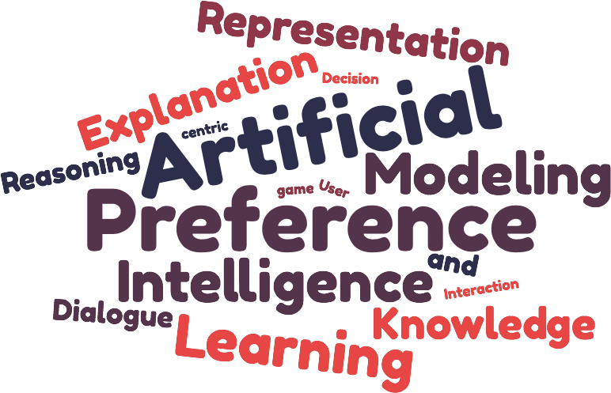

About me
Welcom to my Web site. I am Full Professor in computer science at CentraleSupélec,
Paris-Saclay University and a member of the MICS (Mathématiques et Informatique pour la Complexité et les Systèmes) Lab,
within the Research Group LOGIMICS (LOGIcal approaches for Modelling, data Interpretation and Complex Systems) since February 2024. Before I was an Associate Professor (HDR) in Computer Science in the same Lab. Previously, I was in the Industrial Engineering Lab
at CentraleSupélec (Spet. 2010- January 2019), within the Decision Aid team. I hold a PhD on Computer Science from University of Paris Dauphine in December 2009, on the subject "Multiple Criteria Decision Aiding: a dialectical Perspective".
My research activities are across two fields: Artificial Intelligence and Decision Theory. I am interested in questions
related to Knowledge Representation and Reasoning within the context of Explainable AI, with aim of using formal tools from AI (argumentation theory) and Decision theory
to both specify agent reasoning (resolving conflicts, explaining decisions, etc.) and facilitate agent
interaction (dialogue protocol). I am also
interested by applying decision aiding methodologies within real context.
I defended my Habilitation à Diriger des Recherches (HDR) on the 8th december 2022. My presetation can be found [HERE] and the mauscript [HERE].
A Complete CV in french can be downloaded [here] (06/2024)
News: Since 01/2023 I'm the co-leader of the Working Group 'Explication et Confiance' of the GDR RADIA (https://gt-explicon.github.io)
I defended my Habilitation à Diriger des Recherches (HDR) on the 8th december 2022. My presetation can be found [HERE] and the mauscript [HERE].
A Complete CV in french can be downloaded [here] (06/2024)
News: Since 01/2023 I'm the co-leader of the Working Group 'Explication et Confiance' of the GDR RADIA (https://gt-explicon.github.io)
Topics of Interests:
Explainable AI
Knowledge Representation and Reasoning
Decisin Aiding
Machine/Preference Learning

Contact
Wassila Ouerdane
CentraleSupelec-Batiment Bouygues
Laboratoire MICS
3, rue Joliot Curie
91190, Gif-Sur-Yvettes
Tel: +33 1 75 31 66 78
E-Mail: wassila [dot] ouerdane [@]centralesupelec [dot] fr
Office room: --